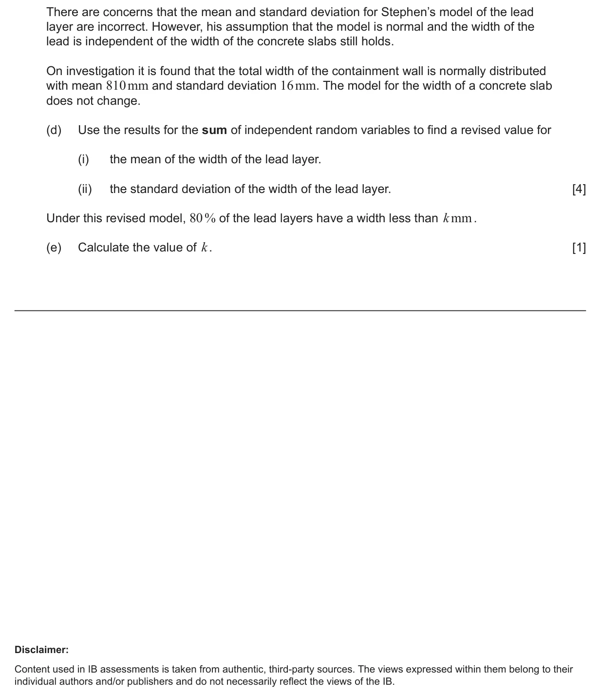
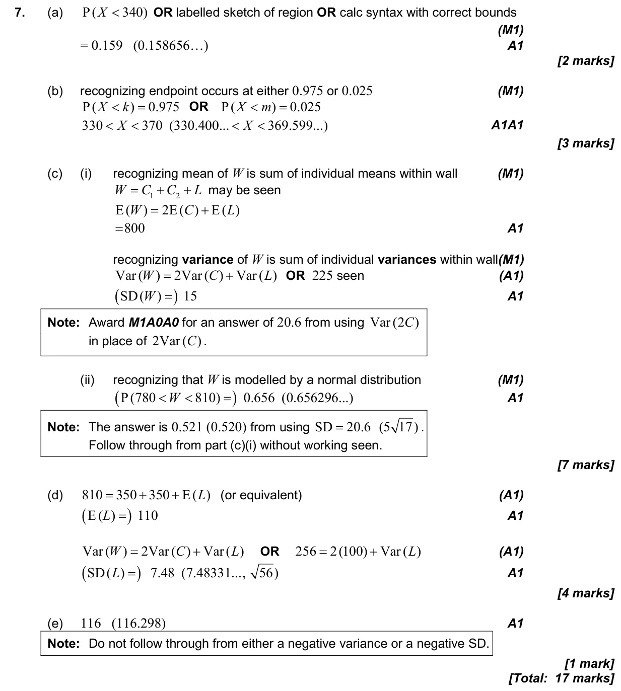

17 marks P2 TZ2 Calculator 4.14 Linear combinations of random variables and unbiased estimates4.9 Normal distribution and calculations4.15 Combining normal variables and the central limit theorem Question Hide breakdown abcde Markscheme 